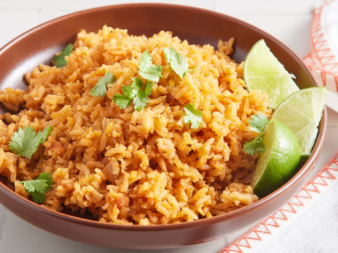

Authentic Mexican rice (often called arroz rojo or red rice) is a beloved, vibrant side dish celebrated for its fluffy texture and savory depth.
The foundational secret to a perfect batch lies in toasting raw long-grain white rice in hot oil until the grains turn a light, golden brown.
This essential step unlocks a rich, nutty aroma, hardens the outer starches, and ensures that the individual grains separate beautifully rather than clumping together or turning mushy during the cooking process.
Once the rice is adequately toasted, it is simmered in a robust liquid base typically composed of chicken broth, tomato sauce or freshly blended Roma tomatoes, onions, and garlic.
The dish is gently seasoned with a warm profile of ground cumin, garlic powder, and a touch of bouillon for a deeply comforting flavor.
To add color, texture, and a hint of subtle heat, many traditional recipes incorporate a mix of diced carrots, peas, and corn, along with a whole serrano or jalapeño pepper punctured and steamed right on top of the grains.
Step 1
Gather all ingredients.
Step 2
Heat oil in a large saucepan over medium heat. Add rice, onion, garlic salt, and cumin; cook, stirring constantly, until rice is puffed and golden.
Step 3
Stir in chicken broth and tomato sauce; bring to a boil.
Step 4
Reduce heat to low, cover, and simmer for 25 minutes. Fluff rice with a fork.
Step 5
Serve and Enjoy!.